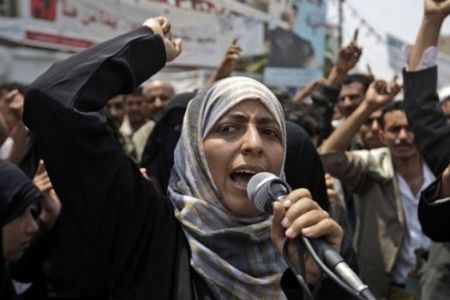

|
|

توکل کرمان؛ یکی از سه برنده ی جایزه ی صلح نوبل 2011: ما مبارزاتمان را تشدید خواهیم کرد
ترجمه شهرزاد امین
شنبه30 مهر 1390
تغییر برای برابری: جایزه ای به همه یمنی ها، توکل کرمان خوشحال و متعجب از اینکه جایزه صلح نوبل برای اولین بار به یک زن در جهان عرب داده می شود، می گوید که این جایزه در واقع به همه ی یمنی ها داده شده است. تانیا هلم، خبرنگار تارنمای پرسپکتیوفمینیستی 10 سوال را با برنده جایزه صلح نوبل در میان گذاشت.
در مورد توکل کرمان بیشتر بدانیم
روزنامه نگار و فعال حقوق بشر که در سال 2005 از بنیانگذاران شبکه روزنامه نگاران بدون مرز بود. نماینده مجلس و یکی از رفرمیستهای یکی از بزرگترین احزاب اپوزیسیون، الاصلاح. این حزب تلفیقی از فرهنگ اسلامی و قبیله ای است که با اصلاحاتی در زمینه ترویج حقوق بشرمخالفت ورزیده است.او در جریان اعتراضات جاری در یمن از حزب الاصلاح فاصله گرفته و به نظر می رسد که به جنبش مستقل جوانانی که در جریان اعتراضات شکل گرفته نزدیک تر شده است. این جنبش آلترناتیوی برای اپوزیسیون موجود است. توکل کرمان حاضر به گفتگو در مورد عضویتش در این حزب نشد.
شما یکی از سه نفری هستید که برنده جایزه صلح نوبل شده اید، چه احساسی دارید؟
 وقتی که این خبر به من رسید من در این چادر بودم. خیلی غیر منتظره بود. من واقعن شگفت زده شدم. من خوشحالم، بله من خیلی خوشحال هستم. همه ما خوشحال هستیم. یمنی ها احساس می کنند جایزه به همه آنها داده شده است. آنها احساس می کنند این جایزه مبارزات مسالمت آمیز آنان را به رسمیت شناخته است. ما اکنون در مبارزه مان مصمم تر می شویم.
وقتی که این خبر به من رسید من در این چادر بودم. خیلی غیر منتظره بود. من واقعن شگفت زده شدم. من خوشحالم، بله من خیلی خوشحال هستم. همه ما خوشحال هستیم. یمنی ها احساس می کنند جایزه به همه آنها داده شده است. آنها احساس می کنند این جایزه مبارزات مسالمت آمیز آنان را به رسمیت شناخته است. ما اکنون در مبارزه مان مصمم تر می شویم.
شما وقتی که در طول روز روی سن رفتید مردم فریاد می زدند "بلغیس، بلغیس" (نام ملکه ای که گفته می شود 900 سال قبل ازمیلاد مسیح یمن را رهبری می کرده است). آیا مردان یمنی امروز آمادگی پذیرش یک زن در نقش رهبری را دارند؟
 بله، آنها این آمادگی را دارند. آین آمادگی را قبل از شروع انقلاب در یمن نیز داشتند. قبل از اینکه ما در اینجا برای اعتراض جمع شدیم احساس می کردم که از طرف مردان قبیله ها نیز حمایت می شدم. آنها در کنار من بوده اند و بله، آنها آماده یک یمن جدید که از طرف یک زن رهبری شود. مردان در واقع آمادگی بیشتری برای پذیرش یک زن رییس جمهور از زنان دارند. اما بطورعمومی یمنی ها حامی اند و اغلب آنها آمادگی پذیرش یک چنین تغییری را دارند.
بله، آنها این آمادگی را دارند. آین آمادگی را قبل از شروع انقلاب در یمن نیز داشتند. قبل از اینکه ما در اینجا برای اعتراض جمع شدیم احساس می کردم که از طرف مردان قبیله ها نیز حمایت می شدم. آنها در کنار من بوده اند و بله، آنها آماده یک یمن جدید که از طرف یک زن رهبری شود. مردان در واقع آمادگی بیشتری برای پذیرش یک زن رییس جمهور از زنان دارند. اما بطورعمومی یمنی ها حامی اند و اغلب آنها آمادگی پذیرش یک چنین تغییری را دارند.
آیا در نظر داری که در انتخابات آینده ریاست جمهوری کاندید بشوی؟
 من چنین آمادگی را ندارم و در حال حاضرچنین هدفی را نیز ندارم.
من چنین آمادگی را ندارم و در حال حاضرچنین هدفی را نیز ندارم.
شما اولین زن عربی هستید که جایزه نوبل به او اهدا شده، دنیای غرب چه چیزی را در مورد زنان عربی نادیده گرفته است؟
 در غرب اطلاعات زیادی درمورد زنان عربی وجود نداشته. اما همرا ه با بهار عربی اطلاعاتی را کسب کرده اند. زنان عرب قوی هستند، پیچیده اند و توان شرکت در تمامی سطوح جامعه را دارند. زنان عرب می توانند کشوری را رهبری کرده و جامعه ای را از پایه بسازند.
در غرب اطلاعات زیادی درمورد زنان عربی وجود نداشته. اما همرا ه با بهار عربی اطلاعاتی را کسب کرده اند. زنان عرب قوی هستند، پیچیده اند و توان شرکت در تمامی سطوح جامعه را دارند. زنان عرب می توانند کشوری را رهبری کرده و جامعه ای را از پایه بسازند.
آیا شما مبارزه نه فقط برای حقوق بشر، بلکه برای حقوق زنان را هم ادامه بدهی؟
 بله، و من مبارزه را به حقوق زنان یمنی محدود نمی کنم. وقتیکه رژیم یمن را ساقط کردیم من برای زنان منطقه و سپس زنان در سراسر جهان مبارزه خواهم کرد.
بله، و من مبارزه را به حقوق زنان یمنی محدود نمی کنم. وقتیکه رژیم یمن را ساقط کردیم من برای زنان منطقه و سپس زنان در سراسر جهان مبارزه خواهم کرد.

اوباما برنده جایزه صلح نوبل در سال گذشته شد. طی 9 ماهی که مبارزات مردم در یمن جریان داشته، شما در اپوزیسیون شدیدن از حمایت و همکاری آمریکا با رژیم یمن اظهار نارضایتی و نا امیدی کرده اید. به نظر تو آیا اوباما صلاحیت کسب جایزه نوبل را داشت؟
 هم بله و هم نه، اوباما حامل یک خواست برای تغییر بود، در کشور خودش و در جهان. او الهام بخش من بوده است. او به بهار عربی یکی از شعارهایش را داد. بله ما می توانیم! اما او درارتباط با یمن اشتباهاتی را نیز مرتکب شده است. او در ارزشهایش متناقض بوده است. او می بایست درادامه به سیاست خویش در ارتباط با یمن فکر کند. ما هم تغییر می خواهیم. اما، از پایه و اساس او حامل این ایده بوده است که تغییر در دنیا ممکن است و از این زاویه جایزه صلح نوبل شایسته اوست.
هم بله و هم نه، اوباما حامل یک خواست برای تغییر بود، در کشور خودش و در جهان. او الهام بخش من بوده است. او به بهار عربی یکی از شعارهایش را داد. بله ما می توانیم! اما او درارتباط با یمن اشتباهاتی را نیز مرتکب شده است. او در ارزشهایش متناقض بوده است. او می بایست درادامه به سیاست خویش در ارتباط با یمن فکر کند. ما هم تغییر می خواهیم. اما، از پایه و اساس او حامل این ایده بوده است که تغییر در دنیا ممکن است و از این زاویه جایزه صلح نوبل شایسته اوست.
-تو شدیدن در مبارزه ای درگیر هستی که هنوز به هدفش نرسیده است، چرا برنده جایزه صلح شدی؟
 به کلیت مبارزه من برای دمکراسی و آزادی و برابری انسان نگاه شد. من از سال 2006 در درون سیستم برای یک یمن نوین مبارزه کرده ام. پی از مدتی همه امیدهایم را برای بهبودی رژیم از دست دادم. بسیاری همراه با من ناظر بودند که این راه به جنگ و فلاکت منجر می شود. انقلاب طبیعتن تاج مبارزه من و بسیاری دیگر است. اما مبارزه ما با بهار عربی شروع نشد. ما از خیلی وقت پیش مبارزه را شروع کردیم. جایزه را به همه آنهایی که در این مبارزه شرکت کرده اند تقدیم می کنم.
به کلیت مبارزه من برای دمکراسی و آزادی و برابری انسان نگاه شد. من از سال 2006 در درون سیستم برای یک یمن نوین مبارزه کرده ام. پی از مدتی همه امیدهایم را برای بهبودی رژیم از دست دادم. بسیاری همراه با من ناظر بودند که این راه به جنگ و فلاکت منجر می شود. انقلاب طبیعتن تاج مبارزه من و بسیاری دیگر است. اما مبارزه ما با بهار عربی شروع نشد. ما از خیلی وقت پیش مبارزه را شروع کردیم. جایزه را به همه آنهایی که در این مبارزه شرکت کرده اند تقدیم می کنم.
-جایزه صلح به مبارزان کشوری که –طبق برآوردها- همواره در آستانه جنگ داخلی قرار دارد؟
 هرگز، کوچکترین شانسی برای جنگ داخلی در یمن وجود ندارد. آنانی که در گذشته فکر می کردند خشونت می تواند مسئله ا ی را حل کند حالا در یافته اند که اینگونه نیست.
هرگز، کوچکترین شانسی برای جنگ داخلی در یمن وجود ندارد. آنانی که در گذشته فکر می کردند خشونت می تواند مسئله ا ی را حل کند حالا در یافته اند که اینگونه نیست.
- آیا به مردانی از قبایل نزدیک به رهبری حزب مخالف الاصلاح، صدیق الاحمر اشاره داری؟ آنها در پایان ماه می گذشته به سلاح روی آوردند.
 آنها برای دفاع از خود به سلاح روی آوردند. رژیم به آنان حمله کرد و آنها از خود دفاع کردند. وقتی آنان به تازه گی، مجددن مورد حمله قرار گرفتند دفاعی مسالمت آمیز و نه خشن از خود نشان دادند. و حالا وقتی مردان قبیله بر این نظرند که راه صلح جویانه تنها راه درست موجود است، تنها یک نفر باقی می ماند که هنوز معتقد است که خشونت می تواند مسائل را حل کند. صالح تنها کسی است که اعمال خشونت می کند. رژیم و ارتش آن.
آنها برای دفاع از خود به سلاح روی آوردند. رژیم به آنان حمله کرد و آنها از خود دفاع کردند. وقتی آنان به تازه گی، مجددن مورد حمله قرار گرفتند دفاعی مسالمت آمیز و نه خشن از خود نشان دادند. و حالا وقتی مردان قبیله بر این نظرند که راه صلح جویانه تنها راه درست موجود است، تنها یک نفر باقی می ماند که هنوز معتقد است که خشونت می تواند مسائل را حل کند. صالح تنها کسی است که اعمال خشونت می کند. رژیم و ارتش آن.
-وقتیکه جایزه را دریافت می کنی و همه جهان گوش می دهد، چه خواهی گفت؟
 من خواهم گفت که همه ما مثل یک ملت واحد می توانیم در یک جهان زندگی کنیم.
من خواهم گفت که همه ما مثل یک ملت واحد می توانیم در یک جهان زندگی کنیم.